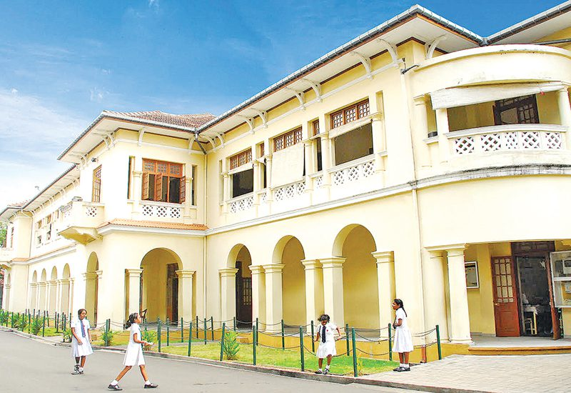
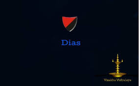

Vishakha Vidyalaya is a prestigious all-girls' school located in Colombo, Sri Lanka. It was founded in 1917 and
is reowned for its excellent academic standards and extracurricular activities.The school has a rich history and
has produced many prominent alumni who have excelled in various fields. The school has a range of facilities,
icluding modern classrooms, laborataries, a library, sports facilities, and a performing arts center. The school
placesgreat emphasis on promoting social responsibility and nurturing a sense of community service among its
students. Overall, Vishakha Vidyalaya is a highly esteemed institution that has played a significant role in
shaping the lives of young women in Sri Lanka.

Our Vision
Virtuous, far sighted and stable leadership is the vision of a Visakhian
Our Mission
To bequeath to tne nation, Visakhians who will safeguard the Sri Lankan culture and national identity, while
being competent, environment friendly, patriotic and well balanced in personality with humane qualities
House Classification
The house system was introduced by Principal Mrs. S.G. Pulimood in 1947.
Named after the Principal Mrs. Dawes(nee Mrs. G.H. Pearse) (September 1926 to April 1933) in July 1947

Named after the Founder of Visakha Vidyalaya, Mrs. Jeremias Dias in July 1947
Named after Sir Baron Jayatilaka, Trustee and the Manager (1920 to February 1939) in July 1947
School Motto
"Pannaya Parisujjhathi"
The School's Motto is from the "ALAVAKA SUTTA" in the Sutta Pitaka of the Tripitaka.
When the yakkha Alavaka first confronted the Buddha, he threatened to exterminate him unless the Buddha answered all his questions. One of the questions he asked was,